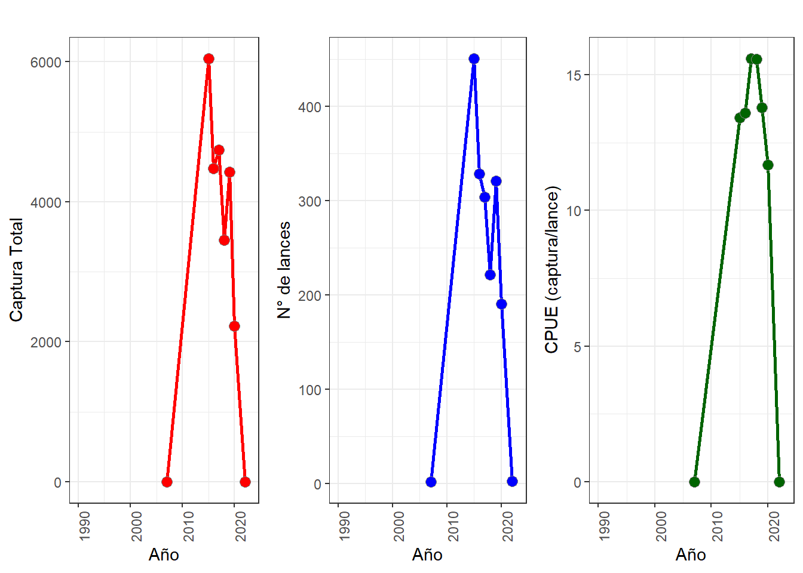

Análisis de Capturas de Atún por la Flota de Cerco en el Océano Pacífico Oriental (1958-2023)
Autor/a
Elmer Ovidio Quispe Salazar
Fecha de publicación
Invalid Date
Datos
Los archivos contienen datos sobre las capturas retenidas de atún realizadas por embarcaciones de cerco en el Océano Pacífico Oriental (OPO) durante el período 1958-2023. Estos datos fueron registrados por observadores a bordo en el mar o extraídos de los libros de registro de las embarcaciones cuando los datos de los observadores no están disponibles. Incluyen información sobre la captura, el número de lances, agregados por año, mes, bandera o tipo de lance, y por cuadrículas de 1°x1° de latitud/longitud.
En el siguiente gráfico se muestra la captura anual de atunes por Perú en el OPO durante el período 1958-2023. Se observa que la captura de atunes ha aumentado en los últimos años, siendo el atún de aleta amarilla (YFT) la especie más capturada.
rangeYear <-range(datosFlag$Year)cap_per <- datosFlag %>%filter(Flag =="PER") %>%select(Year, Month, LatC1, LonC1, NumSets, ALB, BET, BKJ, BZX, FRZ, PBF, SKJ, TUN, YFT)cap_per_anual <- cap_per %>%group_by(Year) %>%summarise(Captura_Total =sum(ALB, na.rm =TRUE) +sum(BET, na.rm =TRUE) +sum(BKJ, na.rm =TRUE) +sum(BZX, na.rm =TRUE) +sum(FRZ, na.rm =TRUE) +sum(PBF, na.rm =TRUE) +sum(SKJ, na.rm =TRUE) +sum(TUN, na.rm =TRUE) +sum(YFT, na.rm =TRUE), NumSets_Total =sum(NumSets, na.rm =TRUE), # Sumar número total de lancesCaptura_Por_Lance = Captura_Total / NumSets_Total # Captura promedio por lance ) %>%ungroup()g1 <-ggplot(cap_per_anual, aes(x = Year, y = Captura_Total)) +geom_line(linewidth =1, color ="red") +geom_point(size =3, pch =21, bg ="red", color ="gray50") +theme_bw() +labs(title ="", x ="Año", y ="Captura Total") +theme(axis.text.x =element_text(angle =90, hjust =1)) +scale_x_continuous(breaks =seq(rangeYear[1], rangeYear[2], 2), labels =seq(rangeYear[1], rangeYear[2], 2)) +xlim(rangeYear)g2 <-ggplot(cap_per_anual, aes(x = Year, y = NumSets_Total)) +geom_line(linewidth =1, color ="blue") +geom_point(size =3, pch =21, bg ="blue", color ="gray50") +theme_bw() +labs(title ="", x ="Año", y ="N° de lances") +theme(axis.text.x =element_text(angle =90, hjust =1)) +scale_x_continuous(breaks =seq(rangeYear[1], rangeYear[2], 2), labels =seq(rangeYear[1], rangeYear[2], 2)) +xlim(rangeYear)g3 <-ggplot(cap_per_anual, aes(x = Year, y = Captura_Por_Lance)) +geom_line(linewidth =1, color ="darkgreen") +geom_point(size =3, pch =21, bg ="darkgreen", color ="gray50") +theme_bw() +labs(title ="", x ="Año", y ="CPUE (captura/lance)") +theme(axis.text.x =element_text(angle =90, hjust =1)) +scale_x_continuous(breaks =seq(rangeYear[1], rangeYear[2], 2), labels =seq(rangeYear[1], rangeYear[2], 2)) +xlim(rangeYear)cowplot::plot_grid(g1, g2, g3, ncol =3)

Captura de especie por la flota de Perú
cap_per_especie <- cap_per %>%group_by(Year) %>%summarise(across(c(ALB, BET, BKJ, BZX, FRZ, PBF, SKJ, TUN, YFT), sum, na.rm =TRUE)) %>%pivot_longer(cols =-Year, names_to ="codeSp", values_to ="Captura") %>%filter(Captura >0) %>%left_join(df, by ="codeSp")ggplot(cap_per_especie, aes(x = Year, y = Captura, color = especie)) +geom_line(linewidth =1) +geom_point(size =2) +facet_wrap(~especie, scales ="fixed") +theme_bw() +labs(title ="Capturas anuales por especie", x ="Año", y ="Captura (toneladas)") +theme(axis.text.x =element_text(angle =90, hjust =1))+scale_x_continuous(breaks =seq(rangeYear[1], rangeYear[2], 2)) +xlim(rangeYear)